Executive Summary
Manufacturing a Battery Energy Storage System (BESS) is not a single-step process—it is a layered, multi-stage production journey that begins at the individual cell level and culminates in a fully containerized, grid-ready energy storage unit. Each stage of this journey demands a distinct category of precision machinery. As global energy storage installations surged 53% in 2024 to reach 205 GWh globally, the pressure to automate, standardize, and scale BESS assembly has made the selection of the right equipment a strategic manufacturing decision. This article details the key machines required across three primary assembly tiers: Pack Assembly, Rack Assembly, and Container Integration.
Understanding the Three Assembly Tiers
Before diving into individual machines, it is essential to understand the hierarchical structure of BESS manufacturing:
- Cell → Module → Pack: Individual lithium-ion cells are sorted, grouped, and welded into modules, which are then integrated with BMS, thermal management, and structural elements to form battery packs.
- Pack → Rack: Multiple packs are installed into steel rack enclosures, connected via busbars, cables, and BMS wiring to form a complete rack system.
- Rack → Container: Finished racks are loaded into a shipping container along with PCS, EMS, HVAC, fire suppression, and control systems to produce a deploy-ready containerized BESS.
Modern automatic BESS assembly lines integrate 21 sequential operations from initial cell loading through final pack validation in what industry experts term a "cell-to-container solution".
Stage 1: Cell Reception and Pre-Processing Equipment
Automatic Cell Loading and Feeding Systems
The assembly process begins with automated cell feeding systems that handle multiple cell form factors—prismatic, cylindrical, and pouch. These systems use conveyor robots and pick-and-place mechanisms to deliver cells to downstream testing and sorting stations without human handling, ensuring cell integrity from the outset.
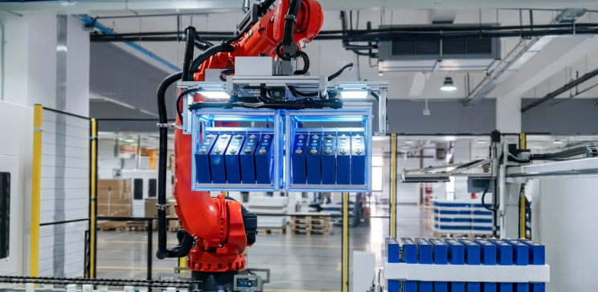
OCV / ACIR Testing and Sorting Machine (Cell Grader)
The Open Circuit Voltage (OCV) and Alternating Current Internal Resistance (ACIR) tester is arguably the most critical incoming quality machine in BESS manufacturing. Every incoming cell is measured for:
- Open circuit voltage (OCV)
- AC internal resistance (ACIR)
- Capacity (in higher-end systems, EIS — Electrochemical Impedance Spectroscopy)
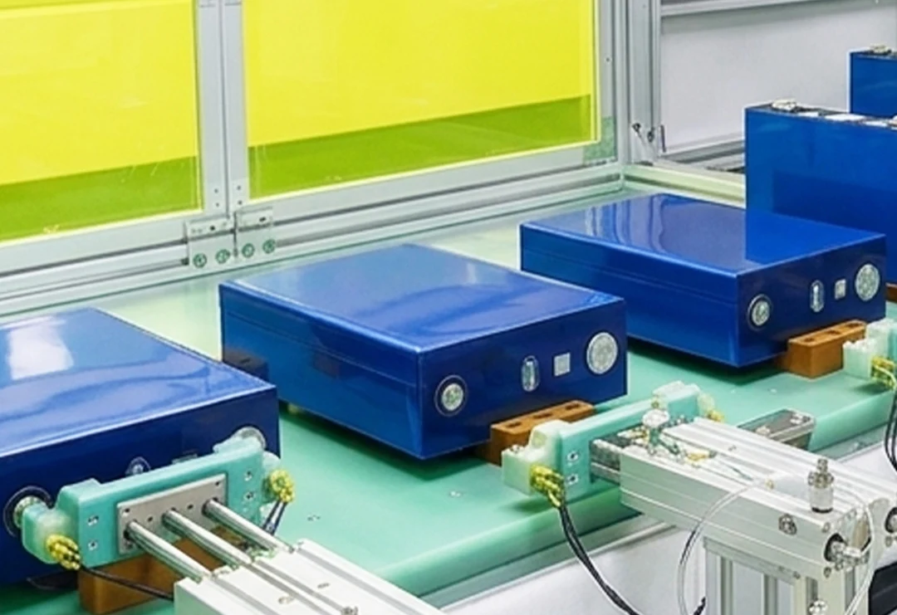
Cells are then binned using the industry-standard 1-2-1 principle: grouping cells within 1% voltage variation, 2% capacity variation, and 1% internal resistance variation. High-throughput graders process 500–1000 cells per hour, ensuring consistent and matched cell groups are fed into module stacking. OCV sorters are equipped with barcode/QR scanners to bind each cell's test data to a unique ID in the MES.
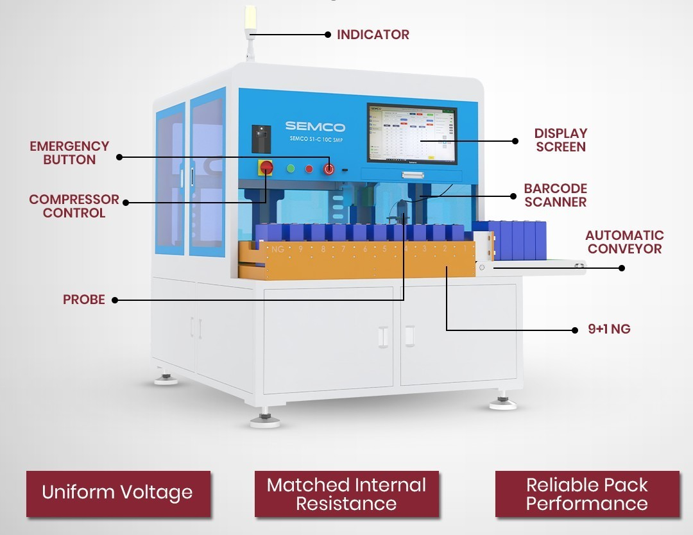
Stage 2: Module Assembly Equipment
Plasma Cleaning Machine
Before stacking, cell surfaces undergo plasma dry cleaning to remove oxides, dust, organic residues, and other contaminants from cell poles and large surfaces. Plasma cleaning is a critical surface preparation step because any surface contamination can cause false welds, insufficient fusion depth, or blow-ups during laser welding. Unlike wet chemical cleaning, plasma treatment is a dry, solvent-free method safe for lithium battery surfaces. BMW and other major OEMs use plasma cleaning routinely in their module production lines.
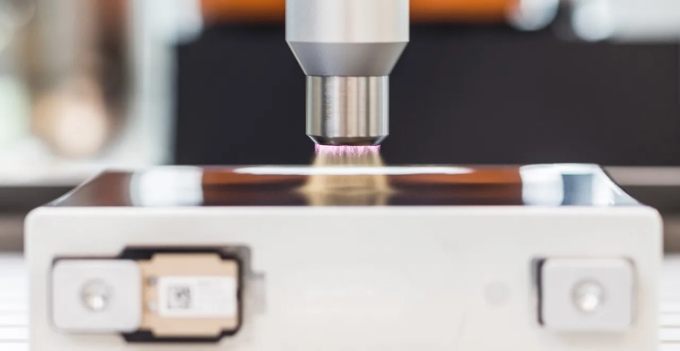
Laser Cleaning Machine
Often used in tandem with or instead of plasma cleaning for pole-face treatment, the laser cleaning machine uses a pulsed fiber laser to ablate aluminum oxide and other deposits from the cell terminal surfaces. Laser cleaning is especially important for prismatic LFP cells, where aluminum terminals are susceptible to oxidation. Clean terminals ensure metallurgically sound welds with consistent conductivity, a prerequisite for long BESS operational life.
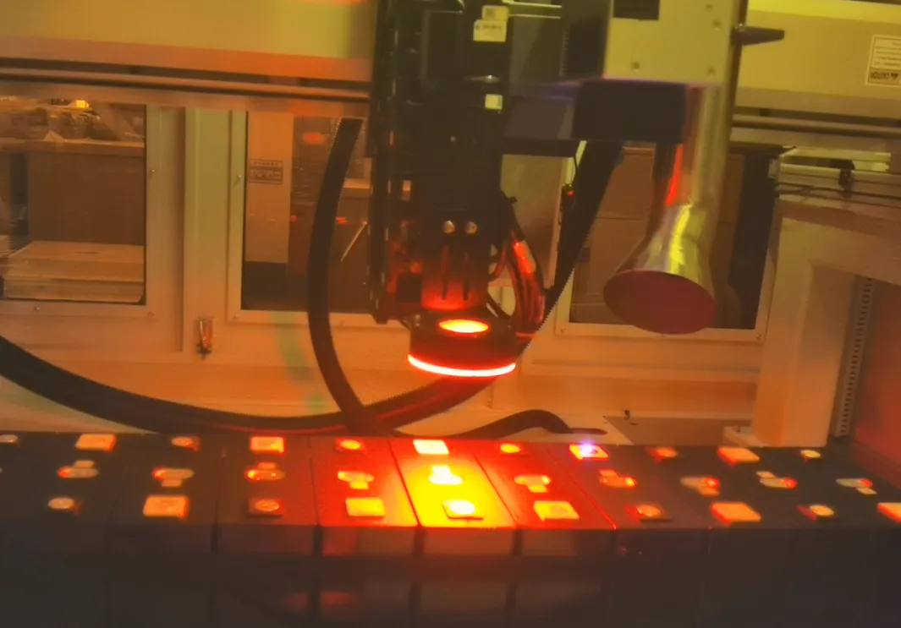
Thermal Interface Material (TIM) Dispensing Machine
After cell surface preparation, adhesive glue dispensing machines apply thermal interface materials (TIMs)—including thermally conductive adhesives, gap-filling compounds, and potting materials—to the large surface of each cell or the cell-to-cooling-plate interface. Systems from companies like Graco, H.B. Fuller, and others use two-component meter-mix dispensing (MMD) systems for precise volume control. The machine applies TIM in a programmed bead or layer pattern, followed by automated optical inspection to verify coverage before stacking. This step is critical for thermal management in hot ambient conditions such as those in India's climate.
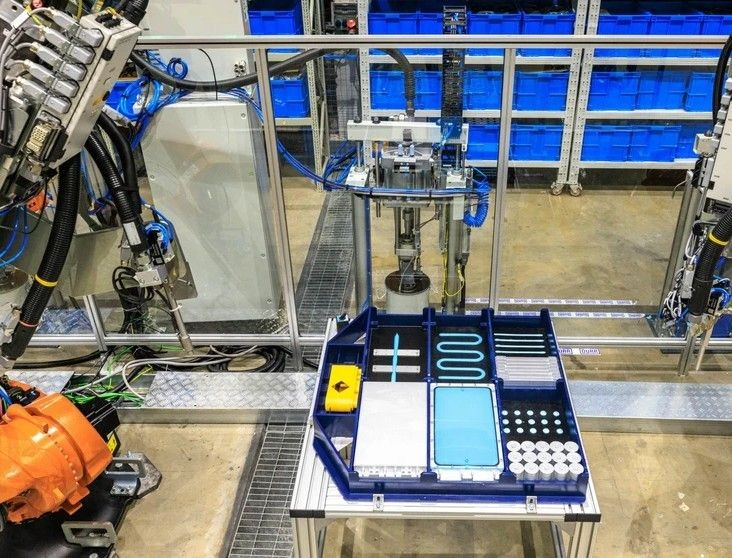
Module Stacking Machine (with 6-Axis Robot)
The cell stacking robot is typically a 6-axis articulated arm that picks sorted cells, rotates them to the correct polarity orientation based on the module design, and places them in the stacking fixture in a precise sequence. Integrated sensors verify polarity and positioning before each placement. The stacked cell group is held in a pneumatic or hydraulic compression fixture to maintain the designed stacking pressure—critical for long-term cycle life in prismatic LFP modules.
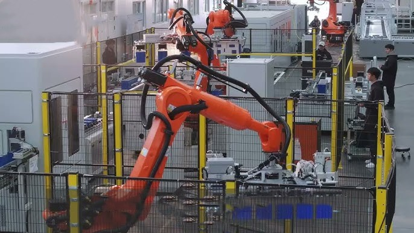
Module Pressing and Steel Belt Bundling Machine
Once cells are stacked, a module compression and steel belt binding machine applies controlled mechanical force using hydraulic or servo-driven presses, compressing the cell stack to the target pre-load specified by the cell manufacturer. Steel strip bands are automatically fed, tensioned around the compressed module, and crimped or welded to maintain this compression permanently. This ensures cell swelling during charge-discharge cycles does not cause mechanical delamination or internal shorts.
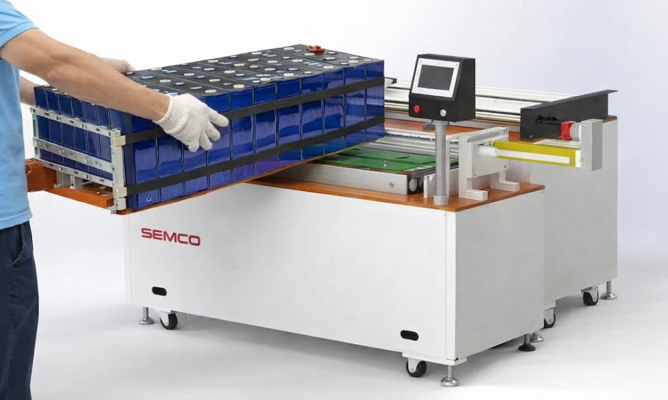
Laser Welding Machine
The fiber laser welding machine is the most technically demanding machine in the module assembly line. It welds aluminum or copper busbars (Cell Contact Systems, or CCS) onto the terminal poles of each cell to form the series/parallel electrical connections within the module. Key parameters include:
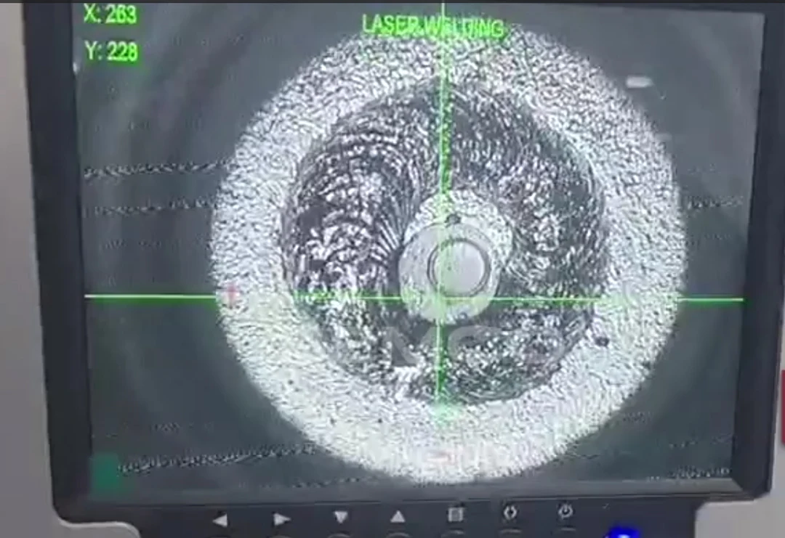
- Laser power: typically 1,000–3,000W fiber lasers
- Weld speed: automated scanning heads enable high throughput
- Precision: seam tracking and real-time power modulation prevent penetration errors
- Vision integration: post-weld optical inspection cameras verify weld quality
Laser welding avoids the vibration and thermal stress of ultrasonic welding, making it the preferred technology for prismatic cells with non-insulated aluminum cases. Flash Battery's automated module assembly line with laser welding achieves 90,000 modules annually with investment exceeding €6 million.
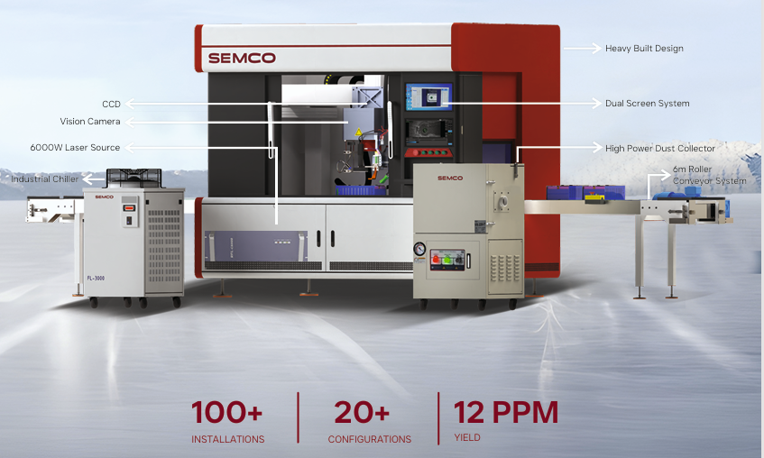
CCD Vision Inspection Machine (AOI System)
At multiple points during module assembly, CCD (Charge-Coupled Device) vision inspection systems automatically detect polarity orientation, surface defects, weld quality, and component positioning. Industrial cameras with AI-based deep learning algorithms achieve polarity detection accuracy exceeding 99.9%, with servo-driven XYZ positioning accuracy of ±0.01 mm and rejection response times under 0.3 seconds. These systems eliminate the 3–5% false detection rates of manual inspection and integrate directly with MES for traceability.
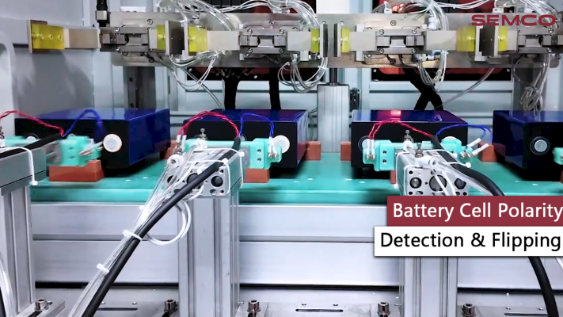
Insulation and Withstand Voltage Testing Machine
Before leaving the module line, each module passes through an insulation resistance and high-voltage withstand tester. This machine applies a test voltage between live parts and the module case to verify insulation integrity—a mandatory safety check per IEC 62619 and UL 9540. Any module with insulation breakdown is automatically rejected and flagged in the MES.
Module End-of-Line (EOL) Test Station
The module EOL tester is a comprehensive validation station that measures and records:
- Total module voltage
- Individual cell voltages via BMS/voltage harness
- Capacity and internal resistance
- Thermal behavior
This station creates a complete digital fingerprint of every module, which is archived in the MES for full supply chain traceability. The data enables root-cause analysis in the field if a module fails during BESS operation.
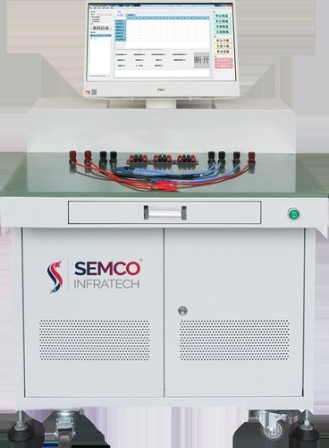
Stage 3: Battery Pack Assembly Equipment
Automated Module Transfer System (AGV / RGV)
Once modules pass EOL testing, Automated Guided Vehicles (AGVs) or Rail-Guided Vehicles (RGVs) transport modules from the module line to the pack assembly area. AGV systems operate on predefined routes integrated with the MES, ensuring each module is delivered to the correct station in the correct sequence. In container assembly lines, heavy-load AGVs carry assembled racks and packs weighing several tonnes between production stations.
Robotic Module Insertion Machine
Modules are installed into the pack enclosure (case or tray) using gantry systems or robotic arms with precision motion control. These systems maintain exact placement tolerance to ensure correct busbar alignment and contact surface.
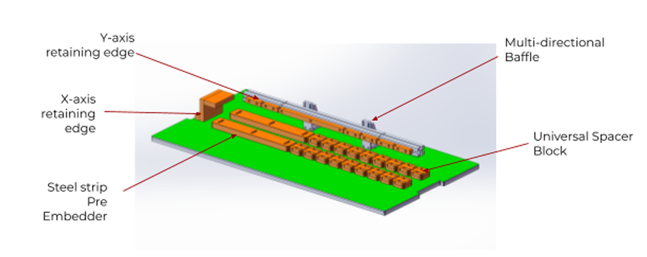
Automated Torque Fastening / Screwdriving System
Programmable electric torque screwdrivers and multi-axis tightening systems fasten modules, busbars, BMS boards, and structural components to precise torque specifications. These tools provide real-time torque and angle feedback, reject under-tightened or over-tightened joints, and log every fastening event into the MES for traceability. Accuracy of ±2.5% is achievable with modern EC (electronically commutated).
Busbar and CCS Installation Robot
Busbar installation robots or semi-automatic fixtures position copper or aluminum busbars onto module terminals, both within the pack and at the inter-pack level for rack connections. Precision is essential because misaligned busbars increase contact resistance, generate heat, and reduce system efficiency. After robotic placement, busbars are tightened by the torque fastening system or laser-welded to the terminals.
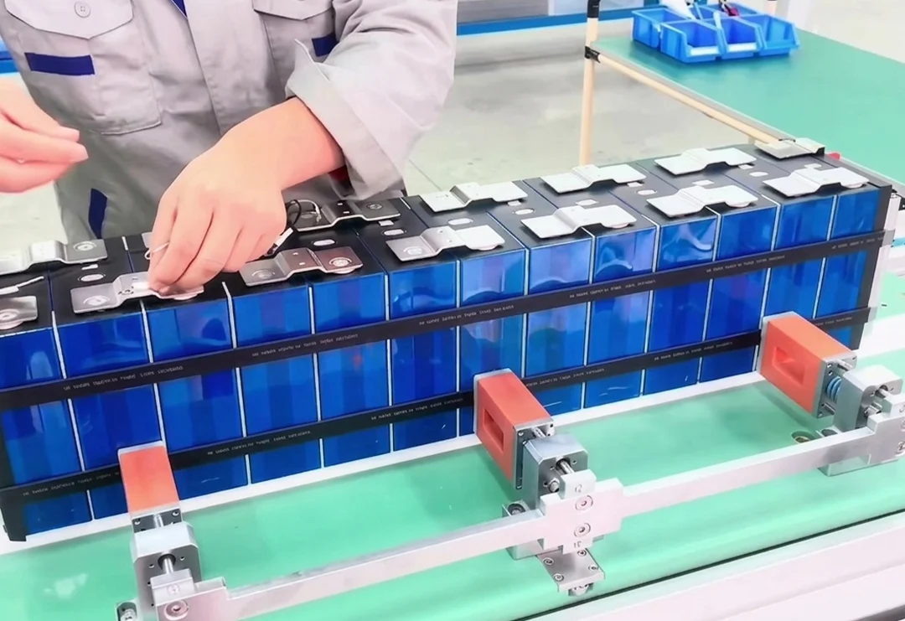
BMS Integration and Wiring Harness Assembly Station
The BMS installation station integrates the Battery Management System board into the pack, connecting cell voltage sensing leads, temperature sensors, and communication cables. Wire harness installation machines or semi-automated benches assist operators in routing, crimping, and connecting harnesses to defined specifications. Automated continuity and wiring harness testers verify every electrical connection before the pack cover is installed.
Pack Leak Testing Machine
For liquid-cooled BESS packs, a pneumatic or helium leak tester validates the integrity of cooling circuit connections before the pack is closed. Differential pressure leak detection or tracer gas methods identify any micro-leaks in coolant fittings, plates, or manifolds.
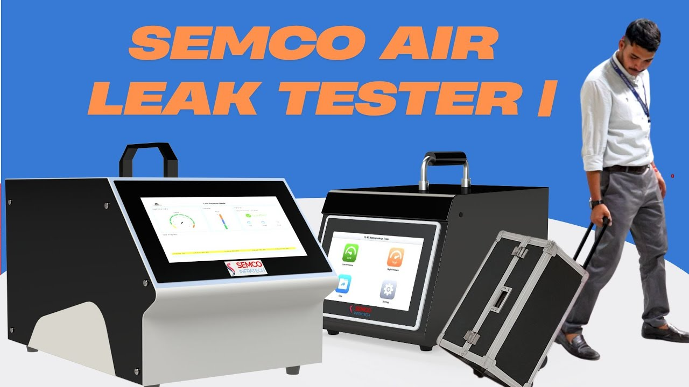
Pack End-of-Line (EOL) Test System
The pack EOL tester is the final quality gate before a pack leaves the assembly line. Testing includes:
- Total pack voltage measurement
- BMS communication verification (CAN/RS485)
- Insulation resistance test (up to 500 GΩ)
- AC/DC high voltage withstand test
- DCIR and ACIR measurements
- HVIL (High Voltage Interlock) verification
- Charge/discharge cycle validation
- SOC calibration
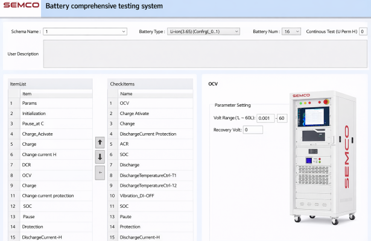
Leading systems from Neware support voltages up to 1,500 VDC, current levels up to 1,000 A, and power ranges from 160 kW to over 2 MW. MES integration via TCP/IP and barcode scanners links every test result to the pack ID for full traceability.emobility-engineering+1
Battery Aging / Formation Machine
For manufacturers starting from cell formation (not purchasing pre-formed cells), formation and aging cabinets apply controlled charge-discharge protocols to activate the cell's electrochemical properties and establish a stable SEI (Solid Electrolyte Interphase) layer. For pack-level aging, high-voltage/high-current aging machines simulate real-world operational conditions with:
- High-voltage testing up to 2,500 V
- Current up to 2,500 A
- Multi-channel scalability for mass production
Stage 4: Rack Assembly Equipment
Rack Structure Assembly Fixture / Jig
Battery racks (steel cabinet structures) are assembled using precision welding fixtures and assembly jigs that ensure dimensional accuracy of the rack frame. This is critical for downstream processes where packs must slide into the rack with tight tolerances.
Pack Insertion System (Electric Forklift or Gantry)
Battery packs are physically inserted into rack slots using either electric lifting forklifts for manual lines or automated gantry systems for fully automatic lines. Gantry systems provide precise three-axis positioning, preventing mechanical stress on terminals and connectors during insertion. Manual lines require 22–28 operators, while automated gantry-based lines need as few as 14.
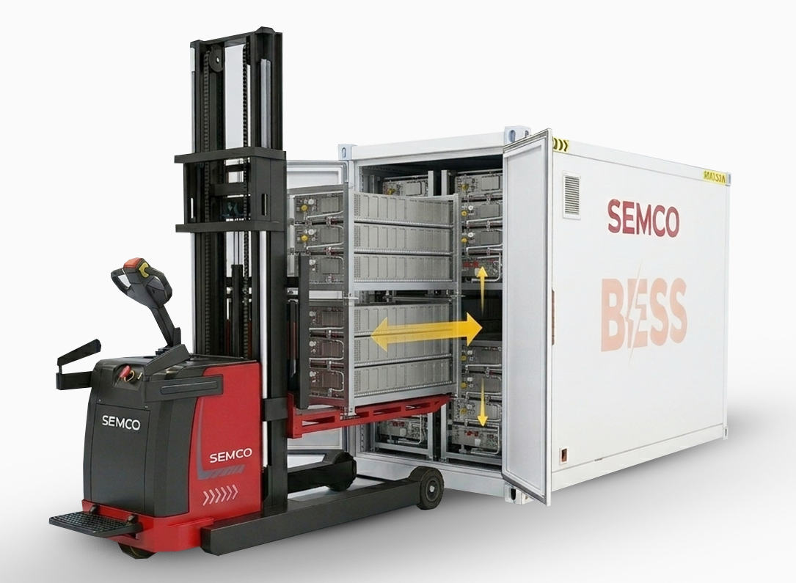
Rack Busbar and High-Voltage Wiring Station
After packs are installed, busbar connection and high-voltage wiring stations connect packs in series or parallel within the rack. Automated or semi-automated cable crimping machines, heat shrink tubing applicators, and torque tools are used to assemble and secure DC cables, communication wires, and ground connections.
Rack-Level BMS Integration and Testing Bench
Each rack incorporates a rack-level BMS or battery cluster controller (BCC). Dedicated integration benches with communication analyzers and multi-channel data loggers verify the BMS can communicate with all constituent packs, read voltage and temperature data accurately, and execute protection functions correctly.
Stage 5: Container Assembly and Integration Equipment
Container Transfer System (Heavy-Load AGV / RGV / Electric Flatcar)
Containers are moved between assembly stations using heavy-load AGVs, rail-guided vehicles (RGVs), or electric flatcars capable of bearing the full weight of a loaded 20-ft or 40-ft ISO container (up to 5,000 kg/m² ground load). This motorized transfer infrastructure is the backbone of a container assembly line layout spanning 100 m (L) × 16 m (W) × 6 m (H).
Automated Gantry / Pack Insertion Robot for Container Loading
In fully automated container lines, gantry robotic systems insert fully assembled packs into container racks with millimeter precision. These systems replace the manual forklift-based approach, reducing insertion damage risk and enabling continuous production flow. Semi-automatic lines use electric lifting forklifts with guided positioning systems.
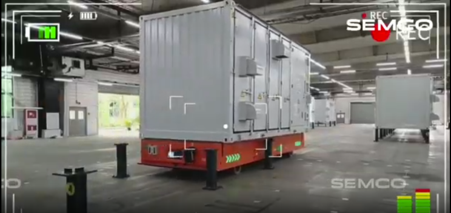
HVAC and Thermal Management Installation Tooling
Dedicated installation fixtures and lifting tools are used to mount air conditioners, liquid cooling distribution manifolds, fans, and heat exchangers inside the container. Pipe crimping tools, torque wrenches, and leak test equipment validate all thermal connections. In India's hot climate, correct HVAC installation is especially critical for BESS life and safety.
Fire Suppression System Installation Tools
Fire suppression system integration stations install aerosol generators, gas suppression nozzles, heat and smoke detectors, and control panels inside the container. Commissioning tools verify sensor connectivity, control panel communication, and suppression system activation triggers as part of the container assembly sequence.
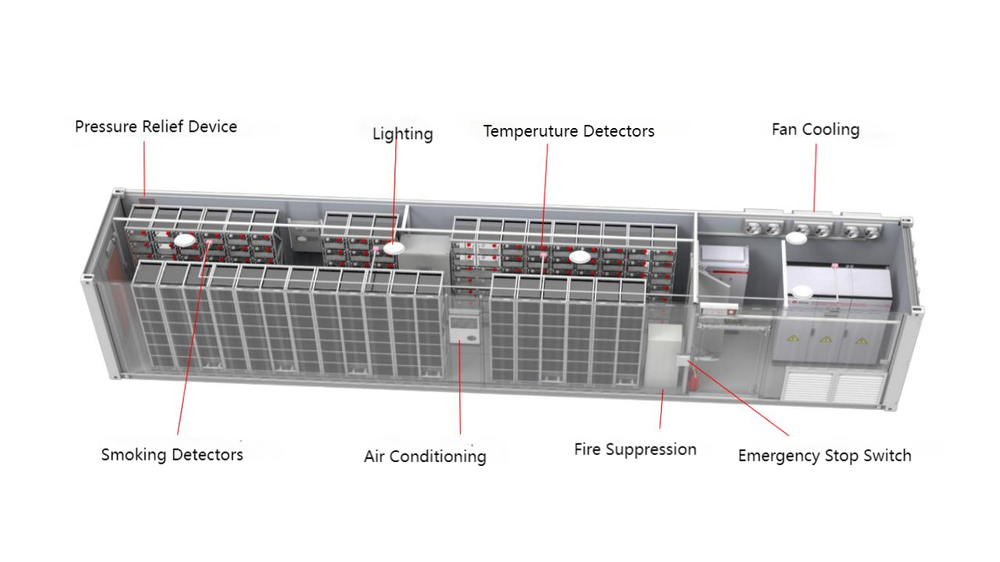
High-Voltage Wiring and Cable Management Station
Automated or semi-automated cable routing and harness installation stations manage the internal electrical infrastructure of the container—connecting racks to the High Voltage (HV) box, junction box, PCS, EMS, and breakers. Wire routing guides, cable trays, torque wrenches, and cable labeling machines ensure a clean, serviceable internal layout.
PCS / Inverter Installation Bench
Power Conversion System (PCS) integration benches mount bidirectional inverters inside the container and establish AC and DC electrical connections. Electrical safety testers verify insulation, grounding, and circuit continuity after PCS installation.
Container-Level EOL Test System (Dynamic Test Station)
The final and most comprehensive test machine is the container-level dynamic test station. This system:
- Performs full charge-discharge cycles at rack and container level
- Validates BMS-to-EMS communication
- Confirms fire detection and suppression system integration
- Verifies thermal management performance under load
- Checks insulation resistance at operating voltages up to 1,650 V
- Runs HVIL, ground fault, and safety interlock tests
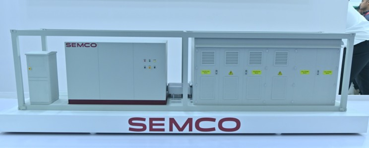
Every containerized BESS must pass this end-of-line validation to meet standards such as IEC 62619, UL 9540, and regional requirements (in India, IS/IEC 62619, CEA regulations, and CEIG inspection protocols).
Intelligent Manufacturing and Support Systems
Manufacturing Execution System (MES)
The MES is the digital backbone that connects all machines on the assembly line. It enables:
- Real-time process monitoring and production dashboards
- Cell-to-container genealogy and traceability
- Automatic non-conformance tagging and rework routing
- Data integration with testing equipment, laser welders, torque tools, and vision systems
Without MES integration, it is impossible to guarantee the full traceability that major utility customers and certification bodies require for BESS installations.
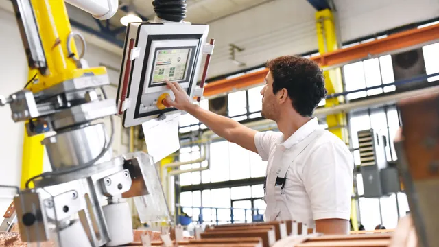
QR Code Printing and Scanning System
Inkjet or laser QR code printers apply unique identifiers to cells, modules, packs, and containers at each transition point. Barcode scanners at every station bind test and assembly data to these IDs, creating an unbroken digital chain from individual cell birth certificate to containerized system delivery record.
Conclusion
The machinery ecosystem for BESS pack, rack, and container assembly is both deep and wide. No single machine defines quality—it is the precision and integration of the entire equipment chain, from the OCV cell sorter to the container-level dynamic test station, that determines whether a BESS system will deliver its designed 20+ years of reliable grid service. As India's energy storage market accelerates under PLI schemes and grid modernization mandates, manufacturers who invest in the right machines—and integrate them under a robust MES—will be best positioned to meet utility-grade quality standards, reduce field failures, and compete in both domestic and global markets.
Know More About Semco Infratech's BESS Assembly Solutions
Explore how Semco Infratech's automatic BESS assembly lines can transform your battery manufacturing operations. The company offers comprehensive solutions tailored to your production scale—from startup R&D operations to full commercial manufacturing volumes. Semco's integrated approach combines state-of-the-art equipment, intelligent process management, and expert technical support to establish efficient, scalable battery production capabilities.

Contact Semco Infratech to discuss your BESS manufacturing requirements and discover how automatic assembly solutions can enhance your production efficiency, ensure product quality, and accelerate your path to market competitiveness.
For demos, solutions, or collaborations:
Connect at sales@semcoindia.com | +91-8920681227 | www.semcoinfratech.com